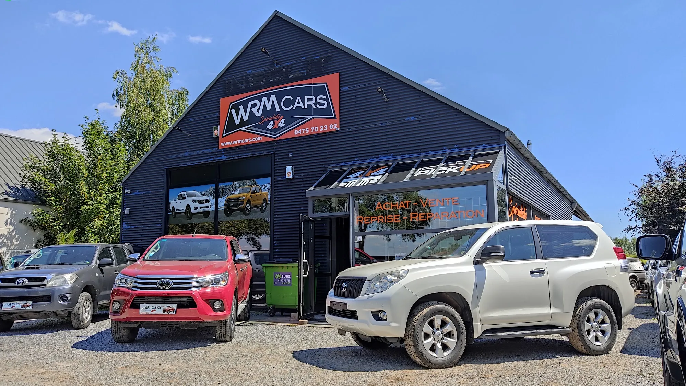
Showroom 4x4 · Gembloux
Spécialiste4x4 & pick-up
Achat, vente, reprise et réparation. Près de 20 ans d'expérience dans les 4x4, les pick-ups et les pièces détachées : d'abord à Tenneville, aujourd'hui à Gembloux.
- 4,6 sur Google · 174 avis
- Ouvert 7 jours sur 7
- 01Achat
- 02Vente
- 03Reprise
- 04Réparation
Des 4x4 d'occasion, à voir et essayer sur place.
Sur le gravier devant le showroom, des pick-ups, des SUV et des 4x4 utilitaires. WRM Cars, c'est un spécialiste : on vient ici pour un véhicule qui tracte, qui charge et qui passe partout.
- Pick-ups
C'est écrit sur la façade : « 4x4 & pick-up ».
- SUV 4x4
Pour la route comme pour les chemins.
- 4x4 utilitaires
Pour le travail, le chantier, la campagne.
- Camionnettes et génie civil
Aussi au catalogue de WRM Cars.
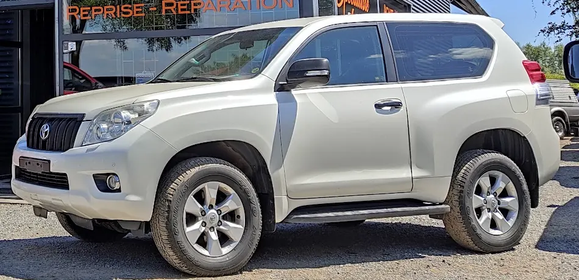
SUV 4x4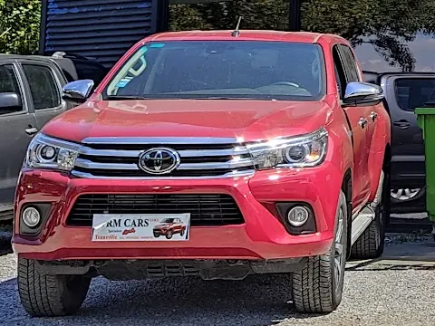
Pick-up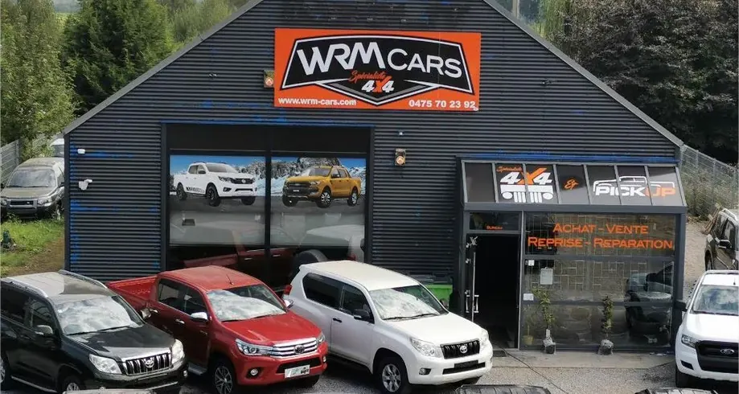
La courPhotos de la fiche Google : le parc change, ces véhicules ne sont peut-être plus disponibles.
Les véhicules sont vendus passés au contrôle technique.
L'historique du kilométrage, remis avec le véhicule.
La garantie légale d'un an sur les véhicules vendus.
Votre véhicule actuel peut être repris à l'achat.
Ce qui est sur le parc aujourd'hui ? Le stock change : appelez le garage ou prenez rendez-vous pour venir voir et essayer.
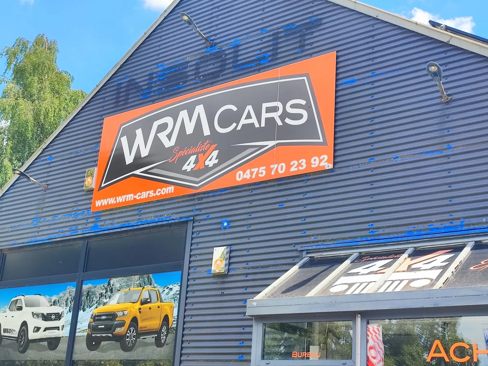
Vous changez de 4x4 ? Le vôtre nous intéresse.
WRM Cars achète les 4x4 et les pick-ups, et reprend votre véhicule quand vous en choisissez un sur le parc.
- Achat de votre 4x4
Pick-up, SUV ou 4x4 utilitaire : vous le vendez directement au garage.
- Reprise à l'achat
Votre véhicule actuel compte dans l'achat du suivant.
Réparation 4x4 et pièces détachées.
« Garage de qualités et avec beaucoup d’expérience dans le domaine du 4x4. »
- Réparation des 4x4 et pick-upsLa mécanique des véhicules tout-terrain, c'est le métier de la maison.
- Pièces détachées 4x4Le garage vend aussi des pièces pour 4x4 : demandez celle qu'il vous faut.
- Retours sous garantieUn souci après l'achat ? Le véhicule revient à l'atelier.
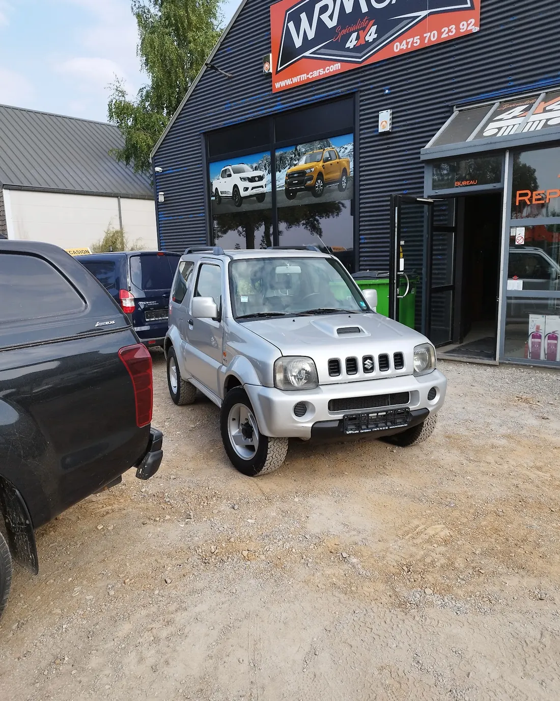
De Tenneville à Gembloux.
Près de 20 ans d'expérience dans les 4x4, les pick-ups et les pièces détachées. WRM Cars a commencé en Ardenne, route de Bastogne à Tenneville, avant de s'installer chaussée de Charleroi à Gembloux.
Route de Bastogne 31, 6970 Tenneville.
Chaussée de Charleroi 245, 5030 Gembloux.
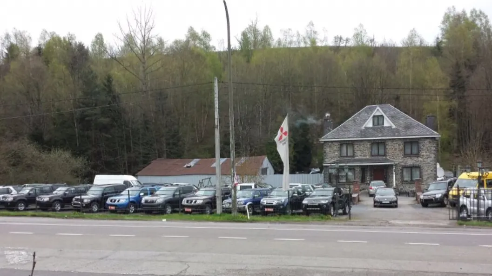
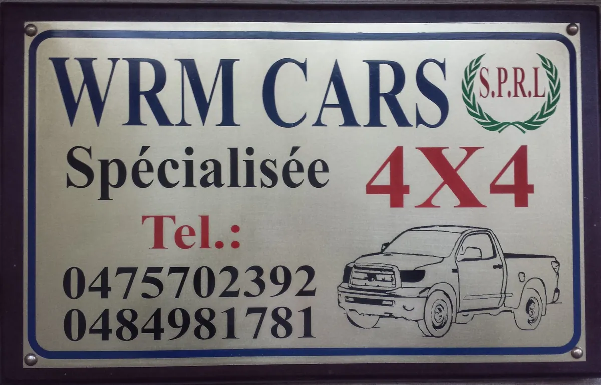
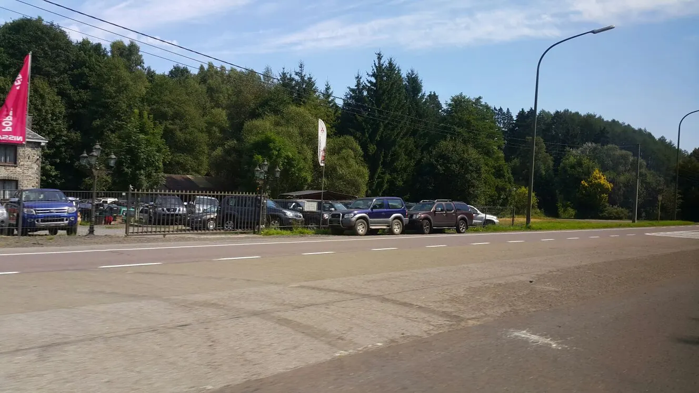
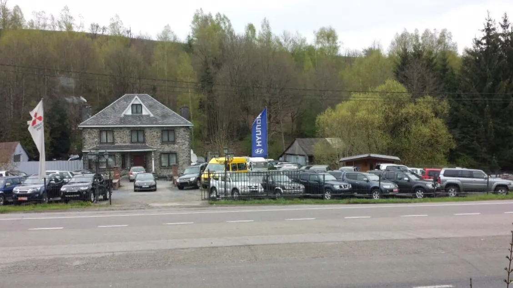
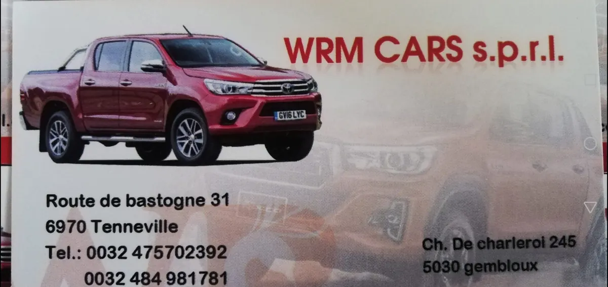
Ce qu'en disent les clients.
Avis laissés sur la fiche Google du garage, cités mot pour mot. Faites glisser pour les lire.
Venez voir, essayer ou réparer.
Choisissez le motif, puis le jour et l'heure dans les horaires du garage : du lundi au samedi de 9 h à 19 h, le dimanche de 10 h 30 à 16 h.
Chaussée de Charleroi, Gembloux.
Horaires du garage
- lundi9 h – 19 h
- mardi9 h – 19 h
- mercredi9 h – 19 h
- jeudi9 h – 19 h
- vendredi9 h – 19 h
- samedi9 h – 19 h
- dimanche10 h 30 – 16 h
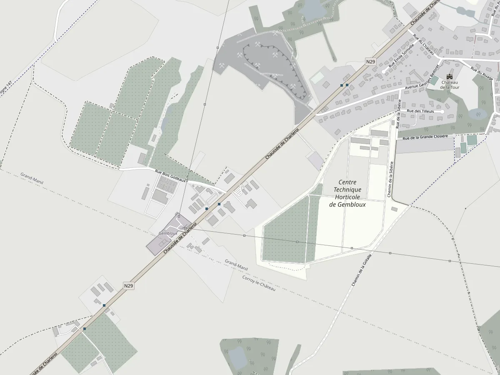
Itinéraire © OpenStreetMap